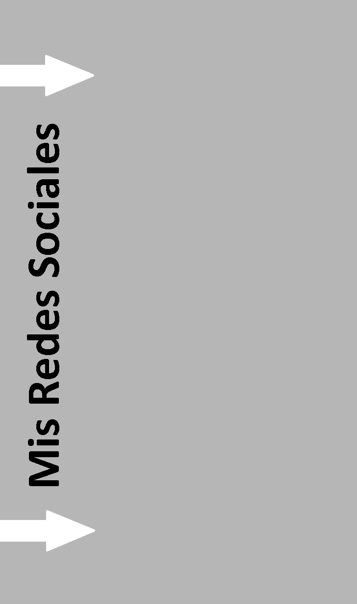

Holaaaaa!!!

Bienvenido
Aqui un poco sobre mí
¿Que tál? Me llamo Jesús Vieira, si alguien me preguntara que palabras me definirían posiblemente respondería: Aplicado, ocupado y tranquilo.
Tengo casi todos mis días ocupados desde el lunes hasta el otro lunes, cumplo con varias actividades entre ellas:
- La universidad (estoy estudiando computación en la Universidad de Carabobo)
- Música (toco con orquestas y grupos individuales)
- Hago ejercicio (calistenia) y duermo mis horas necesarias.
En mis tiempos libres trato de aplicarlo al estudio ya sea de :
- * Elemento discreto, fundamentos de algoritmo, fundamentos de programación *
La universidad:
- * Lenguaje musical, piano, partes de orquesta *
La musica:
- * Participé el american english course en funda UC (curso de inglés básico) *
Estudio de inglés:
- * A travéz de la academia digital udemy ( HTML, CSS , JavaScript, Phyton ) *
Adquirir nuevos conocimientos de la programación:

.png "ir a facebook")